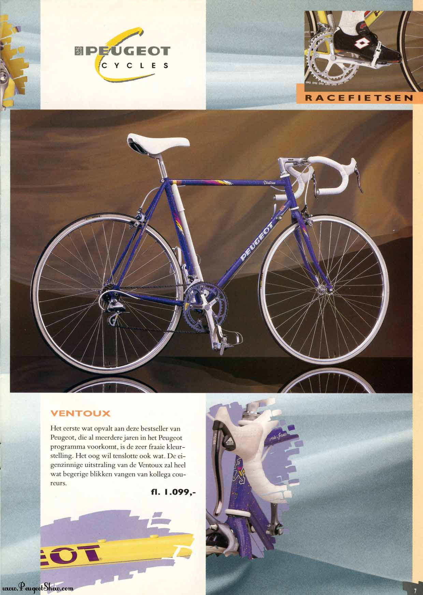

This post belongs to a series about the Ventoux:
- Maintenance 1 this post
- Maintenance 2 on the 2020-07-14
- Maintenance 3 on the 2023-04-29
- Maintenance 4 on the 2023-09-17
Many people started a project during the lock-downs due to covid-19 pandemic. In Luxembourg, we got only one and it triggered my long due bike project. I had two goals, 1) learn basic bike mechanics 2) restore my teenage bike: a Peugeot Ventoux. Learning by doing is, for me, the best way. Yes there are tons of youtube videos about everything but without the real thing to do I have no will to just watch them.
Peugeot Ventoux
The serial number engraved below the bottom bracket is Y003 30825. Meaning it was built in March 1990. I probably got it in March 1991 and I remembered reading again and again the bike catalog waiting for my birthday to come.
The only picture of this catalog that seems relevant online is this one from the Netherlands:

Mine was yellow / grey and I used until 2010 when I left France. And for 10 years it collected dust in some basements.
In 2020 it looked like this:
{kind=link}
Quite a miserable bike, I decided to give it a try bringing back to some ride-ready state and if I failed it would not harm much.
Unmounting the bike
I never unmounted a crank set, a cassette nor even a chain. For 20 years I just put air in tubes and changed them when got a puncture. Hardly did a maintenance in bike shops neither. Thinking about it, that was not smart. I might have changed brake pads and oil chain but it sounded like too much work. I believed in eternal which didn’t go wrong while I though this way but really could have been.
Ordering new wheels
For the wheels, they looked crooked, worn and spokes fragile. So I decided to buy a new set. It would solved the freewheel issue. The set costs €100 which sounded just fair.

Also add tires and tubes, cheap ones (turned out not great).
Brakes and tools
Bike tools are cheap and last a lifetime. Should have invested in that way earlier. Chain whip is easy to use, same for a chain tool. For the crank removal (and bottom bracket), the main issue is not the price, rather the number of standards.
Here is what I purchased from Probikeshop on the 2020-05-13
| Item | Quantity | Price (€) |
|---|---|---|
| Two wheels SHIMANO R501 - 10S(56233) Freewheel SHIMANO | 1 | 102.99 |
| Chain 9S SHIMANO HG53 DEORE / SORA - 116 links | 1 | 12.49 |
| SHI221668 Shimano BL-R400 Brake Lever - black | 1 | 28.50 |
| Shimano PARK TOOL FR-1.3(92114) freewheel | 1 | 10.49 |
| Chain whip BBB TURNTABLE 10S BTL-11(61856) | 1 | 14.49 |
| Tires MICHELIN LITHION 2 700x25c | 1 | 30.98 |
| Air Tube MICHELIN A1 AIRSTOP BUTYL 700x18/25c | 2 | 7.98 |
| Two calipers SHIMANO SORA 3000 | 2 | 40.90 |
| Cable brake Kit and hose SHIMANO PTFE | 1 | 30.90 |
| Bar tape CLASSIC COMFORT | 1 | 7.49 |
I ordered new brake calipers as the current Shimano Exage1 look wasted (see details in the margin).

Mounting the cassette
Instead of buying a new cassette and chain, I only got a new chain and cleaned the cassette. Was a lot of work and realized too late, it was totally worn out and we soon damage the brand-new chain. But, learning is long process.

Cleaning up
After much cleaning, mounting the wheels, removing the brakes and tape bar, looks quite nice already with new shiny wheels. The saddle is a selle royal from my old Von Backhaus, 2012 Copenhagen.

New chain
Never did this, turned out to be not so complex (I now used a better chain tool). I aligned the old and new chain to have the same number of links:

New brakes and housing cables
Another step I experienced for the first time. New housing and cables for both front and rear brakes along the new brake commands on the handle bar. Was easy but took time because I carefully think twice before cutting anything. I added a bit of oil on the cable before putting them inside hoses.
{kind=link}
First ride!
With a transmission and brakes, riding the Ventoux was feasible. Quite emotional to ride it again after so long. It was smooth and nice.

Pedals are from the Diverge bike I got in May 2020 and I unfortunately did not document the setup of the derailleur cable. This was quite ok, I kept the existing gear lever on the down tube, not the indexed setting but the free one. The front derailleur got a new lever (we will see that I changed my mind later on), the small chain ring (weird ovoid shape!) was too small and the big one (52T) way too big.
Tape bar and fenders
Finally, a new tape bar (white in homage of the original one) that took me a lot of time to install as I wanted to do it correctly (as usual see the great video from Calvin Jones about this).


The fenders are the SKS long blades and still perfectly fine more than 3 years later.
The side kickstand was actually too heavy and honestly quite ugly, it quickly went over to another bike.
Of note, the wheel orange reflectors are still there with a red reflector on the saddle. Rear lamp a generous gift from my Danish friend Christian and the U-lock holder did not hold more than 2 weeks.
Bike was finished on the 16th of June, so 6 weeks after starting this project. Much more to come after this first step.
Acknowledgements
Description image from bike wheels transformed by the fun package paintr by CJ Holmes.
Footnotes
Quoting Shimano “EXAGE, coined from “excellent,” “exceed” and “age”. Most certainly it exceeding its age!↩︎